Workforce data presents unique statistical challenges that standard machine learning pipelines fail to handle. Human behavior inside organizations does not follow independent and identically distributed (i.i.d.) assumptions. Departures and call-outs exhibit contagion, schedule volatility clusters into turbulent operational regimes, and extreme outliers inside small localized cohorts distort traditional scaling metrics. Furthermore, career development progresses along directed transition trajectories rather than static job categories, and executive decisions require exact zero-residual accounting rather than black-box approximations.
To address these realities, I built an end-to-end Python framework encompassing 20 advanced feature engineering techniques designed specifically for organizational, store, and workforce dynamics. The complete implementation, unit tests, and interactive research notebooks are open-sourced in the GitHub repository sam-tritto/advanced-people-analytics-features.
Because real enterprise human resources and operational rosters contain sensitive personal information (PII) and strict confidentiality constraints, all demonstrations, tests, and visual benchmarks in this project are executed on mathematically calibrated synthetic data. I implemented dedicated data generation routines in data/synthetic_generators.py that simulate enterprise store rosters, longitudinal overtime records, tiered recognition logs, and multi-year career transitions. These generators use mixture Weibull distributions for early tenure cliffs, Dirichlet distributions for store headcount allocations, log-normal overtime shocks, and controlled non-linear synergies. This approach ensures reproducible, mathematically rigorous validation while maintaining complete privacy.
The Technical Ecosystem & Libraries
Rather than relying solely on generic tabular preprocessing tools, this suite bridges specialized statistical physics, econometrics, survival analysis, and deep learning libraries:
arch: Implements Generalized Autoregressive Conditional Heteroskedasticity (GARCH) models to quantify dynamic conditional volatility in scheduling variance shocks.hmmlearn: Fits Gaussian Hidden Markov Models to decode unobserved latent organizational operational regimes from continuous multivariate emissions.lifelines: Estimates non-parametric Kaplan-Meier survival curves and Nelson-Aalen cumulative hazard curves to transform raw integer tenure into empirical behavioral coordinates.lightgbm: Fits gradient boosted decision trees to extract 2D non-linear feature interaction matrices via TreeSHAP.pyod: Powers Local Outlier Factor (LOF) models to evaluate compensation growth and promotion velocity against localized peer density.shap: Decomposes model predictions into main effects versus pairwise interaction synergies, and pairs with 1D surrogate regression models to pinpoint exact zero-crossing inflection tipping points.statsmodels: Executes Augmented Dickey-Fuller (ADF) tests to verify stationarity in fractionally differenced time series.torch: Powers bottleneck neural autoencoders that compute feature-level reconstruction error to detect organizational structural dysfunction ("The Weirdness Index").scipy&numpy: Handle numerical optimization for Hawkes process Maximum Likelihood Estimation (MLE), dynamic programming for Dynamic Time Warping (DTW) and Longest Common Subsequence (LCSS), and singular value decomposition (SVD) for career transition graph embeddings.
Systematic Taxonomy of the 20 Features
| Functional Domain | Feature Formulations | Primary Problem Solved |
|---|---|---|
| 1. High Cardinality & Cohorts | Bayesian Target Encoding, Grouped LOO Z-Scores, Leave-One-Out Expected Differential (LOO-ED) | Small-sample overfitting in micro-cohorts, outlier self-masking, and separating external shift advantages from manager alpha. |
| 2. Memory & Time Decay | Fractional Differencing, Weighted Weeks Since, EWMA Smoothing, Hazard Embeddings | Balancing time series stationarity with long-range memory, modeling continuous event decay, and non-linear tenure cliffs. |
| 3. Chaos, Volatility & Regimes | Rolling Shannon Entropy, GARCH(1,1) Volatility, Hawkes Contagion, HMM Latent Regimes | Measuring schedule unpredictability, volatility clustering, unscheduled absence contagion waves, and operational crisis states. |
| 4. Anomalies & Sequences | Autoencoder Weirdness Index, PyOD Local Outlier Factor, KL Divergence Drift, DTW Distance, LCSS / EDR Sequences | Multivariate structural decoupling, local peer compensation anomalies, staffing distribution drift, and gap-tolerant schedule matching. |
| 5. Attribution & Interactions | Log-Mean Decomposition (LMDI-I), SHAP 2D Interaction Matrix | Zero-residual executive turnover rate vs mix attribution, and detecting non-linear workforce risk synergies. |
| 6. Mobility & Tipping Points | Movement Embeddings (Career Trajectory), SHAP Inflection Thresholds | Latent cross-functional succession discovery, and empirical zero-crossing tipping points for voluntary attrition. |
Part 1: High Cardinality & Hierarchical Cohorts
Feature 1: Bayesian Target Encoding (Empirical Bayes Shrinkage)
The Operational Challenge: In enterprise retail or logistics, crossing organizational dimensions like STORE_ID × DEPT_CODE produces hundreds of micro-cohorts. Newly opened stores or specialized departments may only have 3 to 5 associates. If one associate departs, naive target encoding registers a catastrophic 33% or 100% turnover rate, leading gradient boosted trees to severely overfit to small-sample noise.
Mathematical Formulation: I implemented an Empirical Bayes shrinkage target encoder with an \(m\)-estimate prior:
$$\hat{S}_i = \frac{n_i \cdot \bar{y}_i + m \cdot \bar{y}_{\text{global}}}{n_i + m}$$Where \(n_i\) is the category sample size, \(\bar{y}_i\) is the sample mean turnover rate of cohort \(i\), \(\bar{y}_{\text{global}}\) is the enterprise baseline, and \(m\) is the pseudo-count smoothing parameter. When sample sizes are small (\(n_i \ll m\)), the estimate shrinks toward the global baseline; as sample sizes expand (\(n_i \gg m\)), the estimate converges to the observed cohort rate. To eliminate target leakage during training, out-of-fold (K-Fold) estimation is enforced.
# Bayesian Target Encoding with Out-Of-Fold (OOF) K-Fold regularization
from src.cardinality import BayesianTargetEncoder
bte = BayesianTargetEncoder(m=15.0, cv_folds=5, seed=42)
roster_df["turnover_encoded_oof"] = bte.fit_transform_oof(
roster_df, group_col="store_dept", target_col="turnover_event"
)
Feature 2: Grouped Leave-One-Out (LOO) Z-Scores
The Operational Challenge: Standard Z-scores evaluate an employee relative to their localized group mean and standard deviation: \(Z_i = (x_i - \mu) / \sigma\). However, in small cohorts (such as a 6-person department), an extreme outlier (e.g. logging 45 weekly overtime hours) directly pulls \(\mu\) upward and inflates \(\sigma\). As a result, the outlier masks itself, producing an artificially deflated Z-score.
Mathematical Formulation: The Leave-One-Out (LOO) Z-Score recalculates cohort statistics excluding observation \(i\):
$$\mu_{-i} = \frac{\sum_{j \neq i} x_j}{N - 1} = \frac{N \bar{x} - x_i}{N - 1}, \quad \sigma_{-i} = \sqrt{\frac{\sum_{j \neq i} (x_j - \mu_{-i})^2}{N - 2}}$$ $$Z_{\text{LOO}, i} = \frac{x_i - \mu_{-i}}{\max(\sigma_{-i}, \epsilon)}$$# Grouped Leave-One-Out (LOO) Z-Score calculation
from src.cardinality import GroupedLOOZScore
loo_scorer = GroupedLOOZScore(group_col="store_dept", val_col="weekly_overtime_hours")
cohort_df = loo_scorer.transform(cohort_df)
Feature 3: Leave-One-Out Expected Differential (LOO-ED Manager Alpha)
The Operational Challenge: Assessing store managers or department supervisors on raw metrics (such as shift throughput or sales volume) conflates managerial capability with exogenous shift advantages. A manager assigned to a flagship airport location during peak Saturday foot traffic will always record superior output compared to a talented manager assigned to an off-peak suburban location on Tuesday morning.
Mathematical Formulation: Inspired by Expected Goal Differential metrics in sports analytics, LOO-ED models expected shift output \(\hat{y}_s^{\text{counterfactual}}\) using strictly external contextual drivers (store classification, day of week, foot traffic volume, staffing hours). The manager's marginal alpha is then isolated as the residual between realized output and counterfactual expectation:
$$\text{LOO-ED}_{s, m} = y_s - \hat{y}_s^{\text{counterfactual}}, \quad \text{Alpha}_m = \frac{1}{|S_m|} \sum_{s \in S_m} \text{LOO-ED}_{s, m}$$from src.attribution import LeaveOneOutExpectedDifferential
loo_ed = LeaveOneOutExpectedDifferential(ridge_alpha=1.0)
shift_df, mgr_alpha_summary = loo_ed.fit_transform(
shift_data,
entity_col="manager_id",
target_col="observed_throughput",
context_cols=["store_id", "is_weekend", "foot_traffic", "staff_hours"]
)
Part 2: Preserving Memory, Lifecycles & Time Decay
Feature 4: Fractional Differencing
The Operational Challenge: Macro workforce metrics (such as enterprise headcount or weekly labor hours) exhibit persistent non-stationary trends. Traditional time series modeling applies integer differencing (\(d=1\)), which guarantees stationarity but erases all multi-year organizational memory, converting long-range headcount accumulation into isolated white-noise shocks.
Mathematical Formulation: Using real-valued orders \(d \in (0, 1)\) via binomial series expansion of the lag operator \((1 - L)^d\):
$$(1 - L)^d = \sum_{k=0}^{\infty} w_k L^k, \quad w_0 = 1, \quad w_k = -w_{k-1} \frac{d - k + 1}{k}$$I implemented an automated grid search that evaluates Augmented Dickey-Fuller (ADF) \(p\)-values across \(d \in [0, 1]\). The system identifies the minimal order \(d^*\) that achieves stationarity (\(p < 0.05\)) while maximizing the Pearson correlation with the original raw series.
from src.memory import scan_fractional_differencing, fractional_difference
# Scan candidate differencing orders to find optimal memory preservation
scan_results = scan_fractional_differencing(headcount_series)
optimal_d = scan_results[scan_results["is_stationary"]].iloc[0]["d"]
stationary_memory_series = fractional_difference(headcount_series, d=optimal_d)
Feature 5: Weighted Weeks Since (Continuous Event-Decay Features)
The Operational Challenge: Human resource systems often store employee recognitions as static flags (e.g. Received_Award_This_Year = 1). This treats an award received yesterday identically to an award received 11 months ago, while completely ignoring whether the recognition was a bronze peer badge or an executive leadership medal.
Mathematical Formulation: I formulated a continuous exponential decay pulse function that integrates tiered award weights and recency:
$$S(t) = \sum_{e \in \text{events}} w_e \cdot \exp\left(-\frac{\ln(2)}{\tau} \cdot (t - t_e)\right) \cdot \mathbb{I}(t \ge t_e)$$Where \(\tau\) is the half-life in weeks, \(w_e\) reflects the award tier (Gold = 1.0, Silver = 0.5, Bronze = 0.25), and \(t - t_e\) is elapsed time. This produces a continuous, responsive morale momentum signal.
from src.memory import weighted_weeks_since
rewards_signal = weighted_weeks_since(
rewards_df,
current_week=52,
half_life_weeks=8.0,
tier_col="award_tier"
)
Feature 6: Exponentially Weighted Moving Average (EWMA)
The Operational Challenge: Simple Moving Averages (e.g. 12-week SMA) suffer from "ghost drops": when a past demand surge falls outside the trailing window, the rolling average suddenly drops, even if current demand is stable. Furthermore, SMAs introduce significant phase lag during operational inflection points.
Mathematical Formulation: Recursive exponential smoothing assigns exponentially declining weights to historical values:
$$y_t = \alpha x_t + (1 - \alpha) y_{t-1}, \quad \alpha = \frac{2}{\text{span} + 1}$$from src.memory import calculate_ewma
labor_df["ewma_12"] = calculate_ewma(labor_df["weekly_hours"], span=12)
Feature 7: Kaplan-Meier & Nelson-Aalen Hazard Embeddings
The Operational Challenge: Passing tenure into regression or tree models as a raw linear integer (e.g. tenure_weeks = 14) forces the algorithm to assume risk changes uniformly over time. In reality, employee attrition exhibits steep non-linear drop-offs at early onboarding (the 90-day cliff) and annual contract milestones.
Mathematical Formulation: Using the lifelines library, I fit non-parametric Kaplan-Meier survival curves \(\hat{S}(t)\) and Nelson-Aalen cumulative hazard curves \(\hat{H}(t)\):
Each associate's raw tenure is mapped to empirical survival probability and cumulative hazard coordinates, providing downstream models with calibrated actuarial features.
from src.memory import fit_hazard_embeddings
embedded_df, hazard_models = fit_hazard_embeddings(
roster_df, tenure_col="tenure_weeks", event_col="turnover_event"
)
Part 3: Capturing Chaos, Volatility & Regimes
Feature 8: Rolling Shannon Entropy (The "Chaos Index")
The Operational Challenge: Two store departments can log the exact same average weekly labor hours per associate (e.g. 38 hours), but exhibit vastly different workplace experiences. One department maintains predictable 8-hour morning shifts, while the other relies on erratic split shifts, short call-ins, and fragmented schedules, accelerating employee burnout.
Mathematical Formulation: Over trailing rolling windows of scheduled shift categories, I compute Shannon information entropy:
$$H(X) = -\sum_{i=1}^K p(x_i) \log_2 p(x_i)$$A score near zero indicates a calm, predictable schedule distribution, while higher scores indicate operational schedule fragmentation.
from src.chaos import rolling_shannon_entropy
schedules_df["shift_chaos_index"] = rolling_shannon_entropy(
schedules_df, val_col="shift_type", window=14, group_col="store_id"
)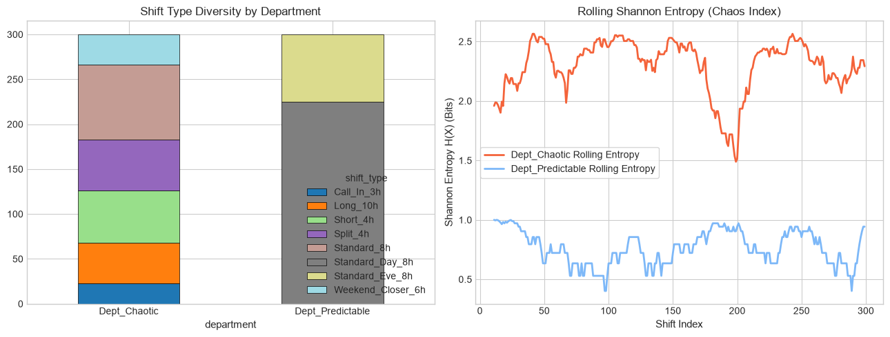
Feature 9: GARCH(1,1) Dynamic Volatility Index
The Operational Challenge: Scheduling variance is rarely homoskedastic. A chaotic holiday week with large schedule discrepancies often sparks operational turbulence in subsequent weeks. Modeling this requires tracking volatility clustering over time.
Mathematical Formulation: Using the arch library, I fit a GARCH(1,1) model to the unexpected scheduling shocks \(\epsilon_t = x_t - \hat{x}_t\):
This extracts a continuous index of operational instability, allowing labor forecasting systems to adjust buffer staffing dynamically.
from src.chaos import fit_garch_volatility
garch_vol, garch_meta = fit_garch_volatility(
schedule_variance_series, p=1, q=1
)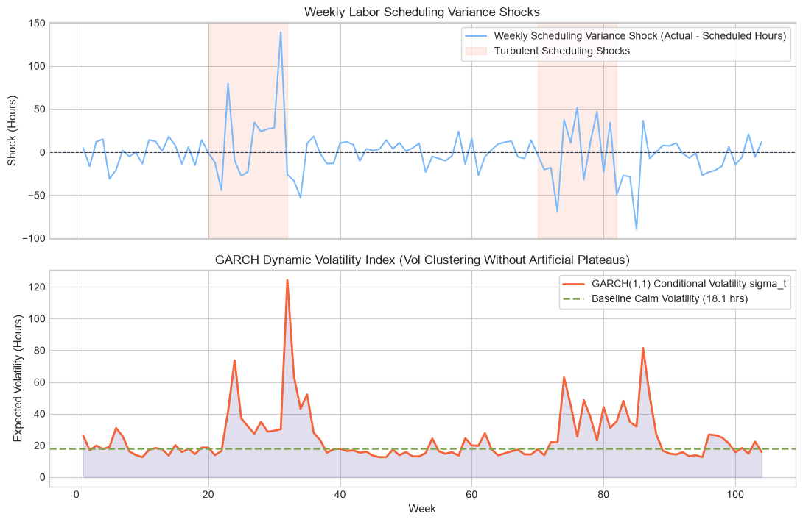
Feature 10: Hawkes Process Intensity (The "Contagion" Feature)
The Operational Challenge: Unscheduled absences, call-outs, and resignations cluster in time. When an associate abruptly calls out, the added burden on remaining staff increases the probability of subsequent call-outs, creating an organizational contagion wave.
Mathematical Formulation: I modeled absence timestamps using a self-exciting Hawkes point process with an exponential decay kernel:
$$\lambda(t) = \mu + \sum_{t_i < t} \alpha e^{-\beta (t - t_i)}$$Where \(\mu\) is baseline exogenous absence intensity, \(\alpha\) is the contagion jump magnitude, and \(\beta\) is the recovery rate. I implemented Maximum Likelihood Estimation (MLE) using scipy.optimize.minimize with bound constraints ensuring the branching ratio \(n = \alpha / \beta < 1\).
from src.chaos import HawkesProcessContagion
hawkes = HawkesProcessContagion()
hawkes.fit(absence_event_timestamps)
realtime_intensity = hawkes.predict_intensity(evaluation_timestamps)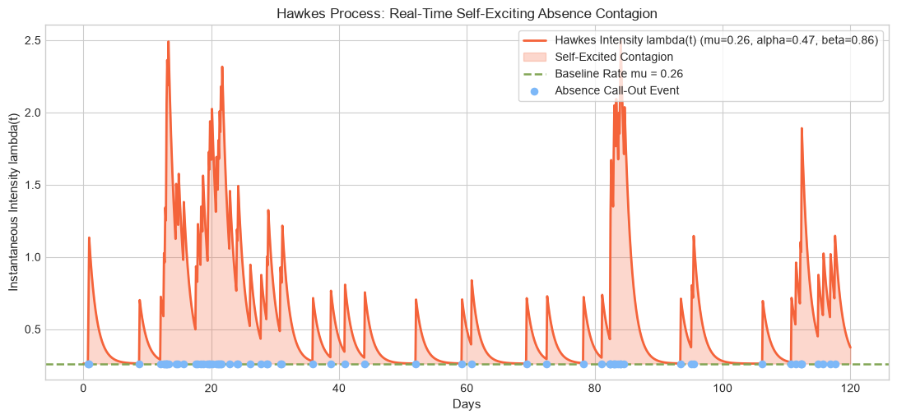
Feature 11: Hidden Markov Model (HMM) Latent Regimes
The Operational Challenge: Elevated weekly overtime can stem from two diametrically opposed realities: a planned seasonal rush with high morale and throughput, or an acute understaffed attrition spiral. Raw overtime hours cannot distinguish between the two.
Mathematical Formulation: Using hmmlearn, I implemented a Gaussian Hidden Markov Model that decodes unobserved latent regimes from continuous emissions (overtime hours and absence rates):
The model decodes three distinct operational states: State 0 (Baseline Operations), State 1 (Planned Seasonal Surge), and State 2 (Understaffed Attrition Spiral). Downstream predictive models ingest the posterior state probabilities rather than raw overtime hours.
from src.chaos import fit_workforce_hmm_regimes
regime_df, state_profiles, hmm_meta = fit_workforce_hmm_regimes(
workforce_ts_df, emission_cols=["overtime_hours", "absence_rate"], n_components=3
)
Part 4: Structural Anomalies, Density & Sequences
Feature 12: Autoencoder Reconstruction Error (The "Weirdness" Index)
The Operational Challenge: Traditional rule-based alerts (e.g. overtime > 20% AND turnover > 15%) miss subtle, systemic dysfunctions that manifest across 20+ correlated operational dimensions (training completion, audit scores, supervisor check-ins, inventory shrinkage).
Mathematical Formulation: I designed a bottleneck neural autoencoder in PyTorch that compresses normalized store profiles into a low-dimensional latent bottleneck. Stores whose operational ecosystem structurally decouples from peer correlations incur high Mean Squared Reconstruction Error (MSE):
$$\text{Weirdness}(x) = \frac{1}{D} \sum_{j=1}^D (x_j - \hat{x}_j)^2$$The detector also returns a feature-level error breakdown to diagnose the specific drivers of operational abnormality.
from src.anomalies import AutoencoderWeirdnessDetector
ae_detector = AutoencoderWeirdnessDetector(latent_dim=4, hidden_dim=12, epochs=150)
ae_detector.fit(healthy_store_profiles)
weirdness_scores, feature_breakdown = ae_detector.transform(all_store_profiles)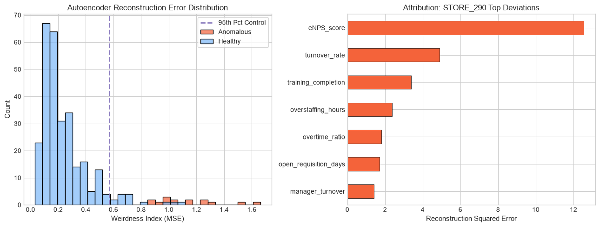
Feature 13: Local Outlier Factor (LOF via PyOD)
The Operational Challenge: Global anomaly detection models evaluate employees against the entire enterprise. A 14% salary increase is completely routine for an entry-level associate transitioning out of an apprenticeship. However, for an 8-year tenured associate in a mature band receiving a standard 3% merit increase, that same 14% bump represents an extreme local anomaly.
Mathematical Formulation: Utilizing the pyod library, I implemented Local Outlier Factor (LOF), which computes the local reachability density of each employee relative to their \(k\)-nearest peers:
This flags localized compensation discrepancies and unusual promotion velocities that global checks overlook.
from src.anomalies import fit_pyod_local_outlier_factor
lof_scores, is_peer_outlier, lof_meta = fit_pyod_local_outlier_factor(
compensation_df,
feature_cols=["tenure_years", "performance_rating", "salary_growth_pct", "promotion_velocity"],
n_neighbors=20,
contamination=0.04
)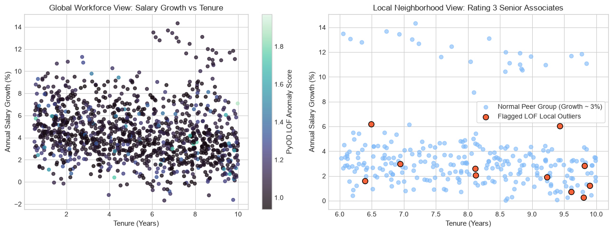
Feature 14: Kullback-Leibler (KL) Divergence (The "Drift" Index)
The Operational Challenge: Corporate operations establishes benchmark staffing distributions across store roles (e.g. 40% Sales, 25% Stocking, 20% Cashiers, 15% Customer Service). Over time, store managers informally reallocate hours, causing silent labor model drift.
Mathematical Formulation: I formulated relative entropy calculations measuring the divergence between the observed store distribution \(P\) and corporate target distribution \(Q\):
$$D_{\text{KL}}(P \parallel Q) = \sum_{x \in \mathcal{X}} P(x) \ln\left(\frac{P(x)}{Q(x) + \epsilon}\right)$$To ensure numerical symmetry and stability, I also integrated Jensen-Shannon Divergence (JSD), which produces a bounded drift index in \([0, 1]\).
from src.anomalies import calculate_kl_divergence, calculate_jensen_shannon_divergence
kl_drift = calculate_kl_divergence(store_role_counts, corporate_target_distribution)
jsd_drift = calculate_jensen_shannon_divergence(store_role_counts, corporate_target_distribution)
Feature 15: Dynamic Time Warping (DTW) Distance
The Operational Challenge: Evaluating store annual demand curves using standard Euclidean distance falsely flags southern stores whose spring garden and outdoor peaks arrive 4 weeks earlier than northern stores. Euclidean distance penalizes this temporal offset as structural dissimilarity.
Mathematical Formulation: Dynamic Time Warping finds the optimal non-linear warping path \(W\) that minimizes cumulative distance between two series:
$$D(i, j) = |x_i - y_j| + \min\left(D(i-1, j), D(i, j-1), D(i-1, j-1)\right)$$This allows regional labor profiles to be clustered based on underlying shape and amplitude regardless of local phase shifts.
from src.anomalies import compute_dtw_distance
total_dist, warping_path, cost_matrix = compute_dtw_distance(store_series, benchmark_series)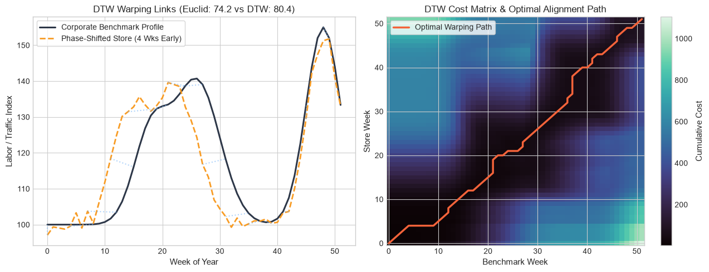
Feature 16: Longest Common Subsequence (LCSS) & Edit Distance on Real Sequences (EDR)
The Operational Challenge: DTW aligns every point and is vulnerable to localized missing data or temporal gaps. In career pathing and shift schedule analysis, an associate taking a 2-week leave of absence causes DTW distance to distort significantly.
Mathematical Formulation: Longest Common Subsequence (LCSS) matches real values within spatial tolerance \(\epsilon\) and temporal window \(\delta\):
$$\text{LCSS}(i, j) = 1 + \text{LCSS}(i-1, j-1) \quad \text{if match}, \quad \text{else } \max(\text{LCSS}(i-1, j), \text{LCSS}(i, j-1))$$ $$D_{\text{LCSS}}(X, Y) = 1 - \frac{\text{LCSS}(X, Y)}{\min(|X|, |Y|)}$$Similarly, Edit Distance on Real Sequences (EDR) penalizes unmatched elements with a constant unit cost rather than raw Euclidean distance, making both algorithms robust to leaves of absence.
from src.anomalies import compute_lcss_distance, compute_edr_distance
lcss_len, lcss_dist = compute_lcss_distance(seq_a, seq_b, epsilon=2.5, delta=4)
edr_dist = compute_edr_distance(seq_a, seq_b, epsilon=2.5)
Part 5: Attribution, Interactions & Accounting
Feature 17: Log-Mean Decomposition (LMDI-I)
The Operational Challenge: When annual company-wide turnover drops from 22% to 18%, leadership faces an attribution question: did employee retention initiatives succeed (Rate Effect), or did historically high-turnover departments downsize relative to the rest of the enterprise (Structural Mix Effect)? Traditional index methods leave unexplained residual errors.
Mathematical Formulation: I implemented an additive Logarithmic Mean Divisia Index (LMDI-I) decomposition that guarantees zero residuals:
$$\Delta R = R^1 - R^0 = \Delta R_{\text{rate}} + \Delta R_{\text{mix}}$$ $$\Delta R_{\text{rate}} = \sum_i L(w_i^1, w_i^0) \ln\left(\frac{r_i^1}{r_i^0}\right), \quad \Delta R_{\text{mix}} = \sum_i L(w_i^1, w_i^0) \ln\left(\frac{s_i^1}{s_i^0}\right)$$Where \(L(a, b) = (a - b) / (\ln a - \ln b)\) is the logarithmic mean weight, \(r_i\) is departmental turnover rate, and \(s_i\) is departmental headcount share. Residual error: \(\Delta R_{\text{rate}} + \Delta R_{\text{mix}} - \Delta R \equiv 0.000000\).
from src.attribution import lmdi_rate_mix_decomposition
decomposed_df, lmdi_summary = lmdi_rate_mix_decomposition(
turnover_summary_df,
h0_col="headcount_y0", r0_col="turnover_y0",
h1_col="headcount_y1", r1_col="turnover_y1"
)
print(f"Mathematical Residual: {lmdi_summary['residual']:.10f}") # Returns 0.0000000000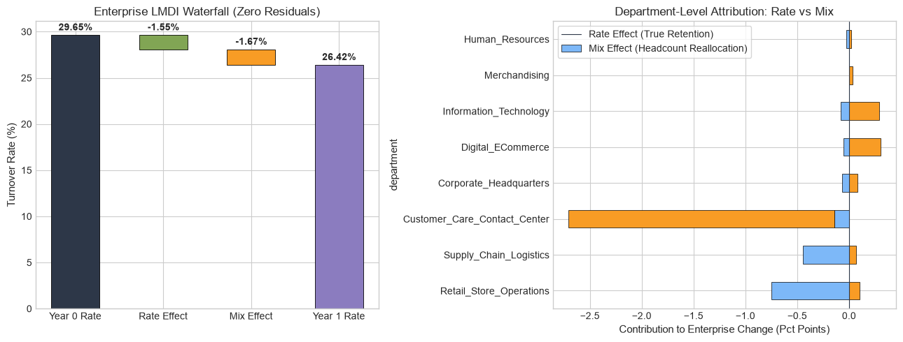
Feature 18: SHAP Interaction Values (2D Non-Linear Feature Interactions)
The Operational Challenge: Standard feature importance evaluates variables in isolation. However, workplace safety incidents and operational errors are often driven by 2D synergies. An inexperienced associate working under an experienced manager is safe; an experienced associate working under a new manager is safe. But an inexperienced associate teamed with a novice manager produces a compounding risk surge.
Mathematical Formulation: Using TreeSHAP on gradient boosted trees, I extracted the \(M \times M\) pairwise interaction matrix:
$$\Phi_{i, j} = \sum_{S \subseteq N \setminus \{i, j\}} \frac{|S|!(M - |S| - 2)!}{2(M - 1)!} \left[ f(S \cup \{i, j\}) - f(S \cup \{i\}) - f(S \cup \{j\}) + f(S) \right]$$The diagonal captures pure main effects, while off-diagonal elements isolate pure non-linear risk synergies.
from src.attribution import compute_shap_interaction_matrix
shap_inter_matrix, summary_df = compute_shap_interaction_matrix(
tree_model, X_train, feature_names=features
)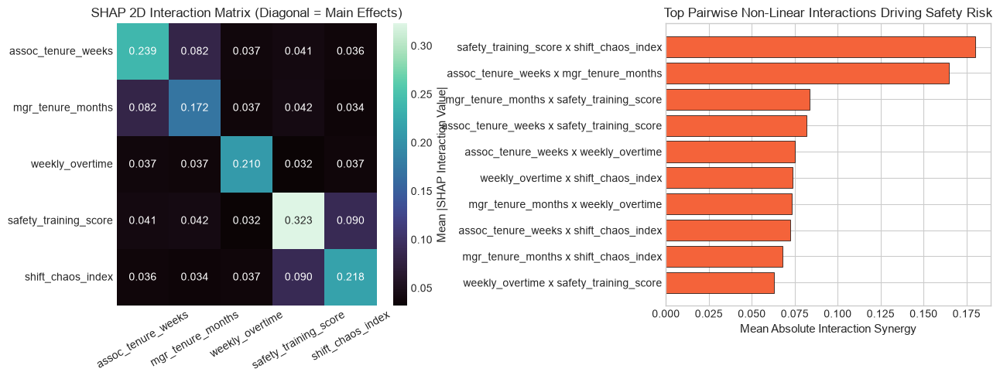
Part 6: Career Mobility, Succession & Behavioral Tipping Points
Feature 19: Movement Embeddings (Career Trajectory & Graph Embeddings)
The Operational Challenge: Succession planning often treats job titles as static, isolated categories, relying strictly on traditional vertical feeder ladders (e.g. Sales Associate → Department Supervisor). This overlooks lateral talent acquired across operational and inventory roles.
Mathematical Formulation: I modeled organizational career mobility as a directed transition graph. By computing multi-step transition diffusion with decay factor \(\gamma\):
$$\mathbf{M} = \sum_{k=1}^K \gamma^{k-1} \mathbf{P}^k$$ $$\mathbf{M}_{\text{sym}} = \frac{1}{2}(\mathbf{M} + \mathbf{M}^T) + 0.1 \cdot \mathbf{I} = \mathbf{U} \mathbf{\Sigma} \mathbf{V}^T \implies \mathbf{Z} = \mathbf{U}_d \mathbf{\Sigma}_d^{1/2}$$Role vectors are normalized to unit spheres (\(\|\mathbf{z}_r\| = 1\)). Associate career histories are embedded via recency-decayed historical vectors, allowing succession candidates to be ranked using cosine similarity and directional reachability.
from src.mobility import CareerMovementEmbeddings
movement_model = CareerMovementEmbeddings(embedding_dim=8, max_steps=3, decay_factor=0.6)
movement_model.fit(historical_career_sequences)
succession_rankings = movement_model.recommend_succession_candidates(
target_role="Department_Supervisor",
associates_df=candidate_pool_df
)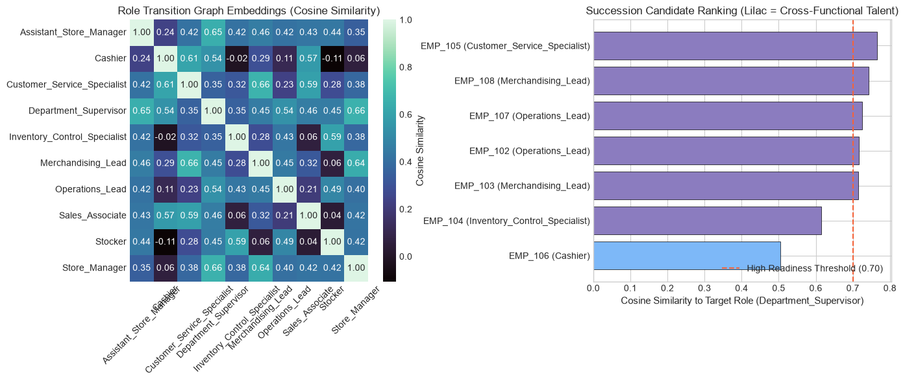
Feature 20: SHAP Inflection Thresholds for Term Rates
The Operational Challenge: Operational leaders need actionable tipping points rather than black-box probabilities (e.g. "At what overtime hour does retention flip into flight risk?").
Mathematical Formulation: On observed feature values versus Shapley contributions, I fit a continuous 1D surrogate regression model \(\hat{g}_j(x_j) \approx \phi_j\). The model evaluates predictions across a dense uniform grid and identifies exact zero-crossings \(\Phi_j(x) = 0\) via sign changes and linear interpolation:
$$x^* = x_k - \hat{g}_j(x_k) \frac{x_{k+1} - x_k}{\hat{g}_j(x_{k+1}) - \hat{g}_j(x_k)}$$This delineates protective regions (\(\text{SHAP} < 0\)) from hazard regions (\(\text{SHAP} > 0\)) across metrics like overtime hours, comp-ratios, commute duration, and manager 1-on-1 frequency.
from src.attribution import (
extract_shap_inflection_thresholds,
calculate_retained_vs_terminated_shap_contributions
)
thresholds, summary_df = extract_shap_inflection_thresholds(X_turnover, shap_values)
cohort_contributions = calculate_retained_vs_terminated_shap_contributions(
X_turnover, shap_values, y_turnover
)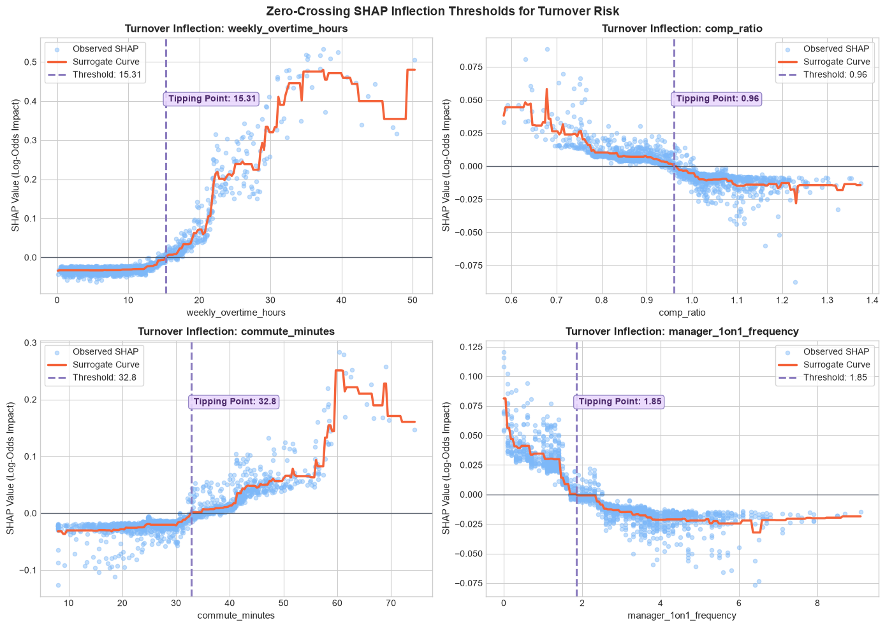
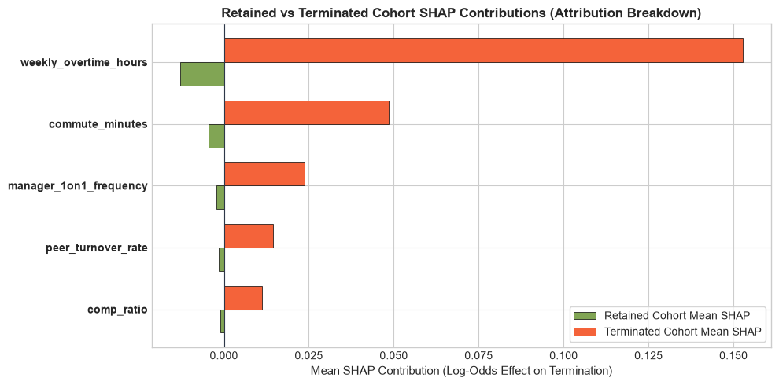
Verification & Test Suite Execution
To ensure mathematical and statistical integrity, the codebase includes 21 comprehensive automated unit tests in tests/test_features.py. The suite tests:
- Exact zero residuals for LMDI Divisia decomposition (\(|\text{residual}| < 10^{-9}\)).
- Grouped LOO Z-Score sensitivity to severe localized outliers without self-masking.
- Empirical Bayes shrinkage bounds on high-cardinality sparse cohorts.
- Fractional differencing binomial weight convergence and ADF stationarity.
- Shannon entropy bounds (\(0 \le H \le \log_2 K\)).
- Hawkes process excitation intensity updates under Maximum Likelihood Estimation.
- Dynamic Time Warping invariance to temporal phase shifts.
- Gap robustness of LCSS and EDR sequence metrics over leave intervals.
- PyOD Local Outlier Factor localized density score separation.
- Unit-norm geometry of spectral graph movement embeddings and candidate succession scoring.
# Run all 21 automated unit tests via uv
uv run pytest tests/ -vSummary & Engineering Recommendations
Moving beyond standard tabular defaults allows People Analytics teams to reflect the true structural reality of human organizations. By handling small-cohort sample noise via Bayesian shrinkage, preserving multi-year organizational memory via fractional differencing, modeling absenteeism contagion via Hawkes processes, and extracting actionable tipping points via surrogate SHAP regressions, this framework bridges the gap between machine learning capability and operational leadership decisions.